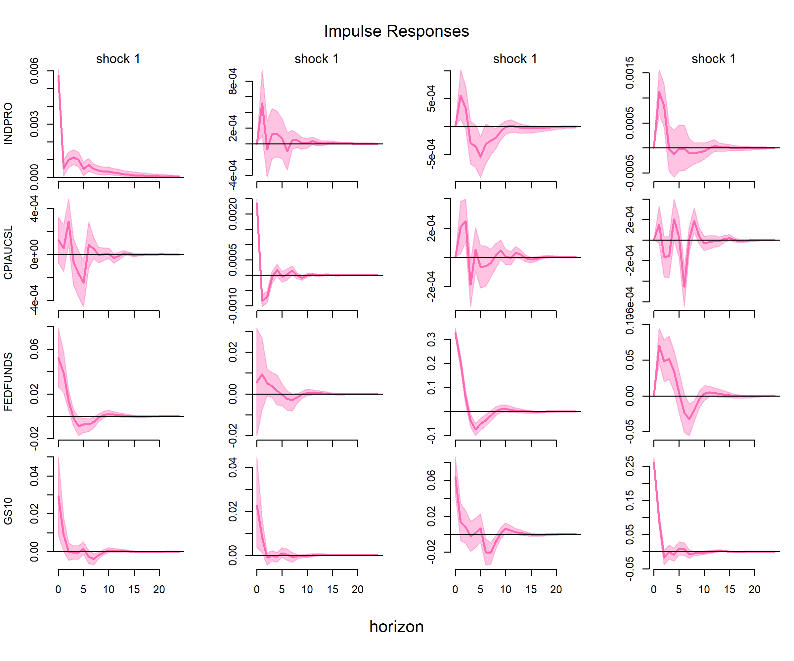

Blog11: The Transmission of Monetary Policy: A Bayesian SVAR Approach
Introduction
When the Federal Reserve raises interest rates, how quickly does the real economy slow down? Does inflation respond immediately, or with a lag? These questions are central to monetary policy, yet answering them requires more than a simple regression—it requires identifying exogenous monetary policy shocks that are not contaminated by the central bank’s response to economic conditions.
This analysis estimates a Bayesian Structural Vector Autoregression (SVAR) using monthly U.S. macro data from 1980 to 2019. I use Markov Chain Monte Carlo (MCMC) to draw from the posterior distribution of the model parameters, and I trace how a contractionary monetary policy shock propagates through industrial production, inflation, and long-term interest rates over 24 months.
The headline result: a monetary tightening has a real and persistent effect on economic activity, with industrial production declining after about 6 months, and a delayed decline in inflation that is consistent with sticky prices.
How I Measured It
I use the Federal Reserve’s FRED-MD database. To achieve stationarity, I apply the following transformations: - INDPRO (Industrial Production) and CPIAUCSL (CPI): first differences of the natural logarithm (i.e., monthly growth rates). - FEDFUNDS (Federal Funds Rate) and GS10 (10-Year Treasury Yield): levels (in percentage points).
The VAR contains four variables, ordered from most exogenous to most endogenous: 1. INDPRO — real economic activity. 2. CPIAUCSL — price level. 3. FEDFUNDS — the monetary policy instrument. 4. GS10 — long-term financial conditions.
The sample runs from January 1980 to December 2019. I exclude the post-2020 period to avoid pandemic distortions. I am aware that the zero lower bound (ZLB) was binding during 2009–2015; I retain this period but flag it as a limitation.
Why a Reduced-Form VAR Cannot Identify Shocks
A reduced-form VAR estimates
\[ Y_t = A_1 Y_{t-1} + \cdots + A_p Y_{t-p} + e_t, \]
where the residuals \(e_t\) are composite shocks: they mix monetary policy shocks, demand shocks, supply shocks, and everything else. The covariance matrix \(\Sigma = E[e_t e_t']\) tells us how these residuals covary, but it cannot tell us which part of the residual is the structural monetary policy shock.
Formally, structural shocks \(u_t\) relate to reduced-form residuals via \(e_t = B u_t\). From \(\Sigma = B B'\), we have \(N(N+1)/2\) free parameters in \(\Sigma\) but \(N^2\) parameters in (B). With four variables, () has 10 parameters and (B) has 16. We need six additional restrictions to identify (B). Without them, any rotation of (B) fits the data equally well, and the impulse responses are not unique.
Identification: Recursive Restrictions
I impose Cholesky recursive restrictions (Sims, 1980). This assumes a lower-triangular contemporaneous impact matrix (B):
- Industrial production and inflation do not respond contemporaneously to a monetary policy shock within the same month.
- The federal funds rate can respond contemporaneously to output and inflation.
- The 10-year yield responds to all three variables contemporaneously.
The ordering \([\text{INDPRO}, \text{CPIAUCSL}, \text{FEDFUNDS}, \text{GS10}]\) delivers the six zero restrictions needed to identify (B).
An important caveat: This identification scheme imposes a structural zero on the impact of the monetary shock on CPI at horizon 0. Any observation of a zero response at month 0 is a by-product of the assumption, not an empirical finding. To investigate whether prices respond immediately without imposing this restriction, one would need sign restrictions or external instruments.
The Bayesian Framework
I estimate the SVAR using a conjugate normal-inverse-Wishart prior: - Prior on coefficients: A Minnesota prior shrinks the VAR coefficients toward a random-walk benchmark (first-lag coefficient of 1, all others 0), preventing overfitting with 480 observations and 100 coefficients. - Prior on covariance: An inverse-Wishart prior on (). - Likelihood: Given the coefficients and covariance, residuals are multivariate normal: (e_t N(0, )). - Posterior: Bayes’ rule combines the prior and likelihood to form \(p(A, \Sigma \mid Y) \propto p(Y \mid A, \Sigma) p(A) p(\Sigma)\).
Why MCMC?
The posterior has no closed form. The coefficients (A) and covariance () have a joint distribution that cannot be factored into standard densities. Moreover, the impulse responses—the quantity we care about—are nonlinear functions of (), so their posterior distribution is analytically intractable.
Gibbs sampling solves this. At each iteration, I draw (A) from its conditional posterior (multivariate normal, given ()), then draw () from its conditional posterior (inverse-Wishart, given (A)). Repeating this produces draws that converge to the joint posterior. I run 1,000 burn-in iterations, then retain 2,000 draws. For each draw, I compute the impulse response, which gives me the full posterior distribution of the response at each horizon—not just a point estimate.
The lag order is fixed at (p = 6), a standard choice in the monetary SVAR literature for monthly data (e.g., Christiano, Eichenbaum, and Evans, 1999; Bernanke, Boivin, and Eliasz, 2005), capturing half a year of dynamics.
Results: The Transmission of a Monetary Tightening

The figure shows the impulse response matrix. Due to the Cholesky ordering, the third column represents the contractionary monetary policy shock. The shock is normalized to a one-standard-deviation increase in the federal funds rate (approximately 30 basis points in this sample).
Looking at the third column: - Federal Funds Rate (Row 3): The rate jumps instantly by about 30 basis points, showing a clear exogenous tightening, before decaying. - Industrial Production (Row 1): Initially stable, output falls persistently below zero starting around month 3, reaching a trough at roughly month 6 to 9. This confirms that a monetary tightening has a real, negative effect on economic activity. - CPI Inflation (Row 2): By construction of the recursive restriction, the response at horizon 0 is exactly zero. After this initial period, inflation remains near zero for a few months and then drops into negative territory, consistent with sticky-price models where prices adjust slowly. - 10-Year Yield (Row 4): The long-term yield rises immediately alongside the short rate, confirming the transmission of monetary policy across the yield curve.
The pink shaded areas represent the 68% Bayesian credible intervals, capturing the estimation uncertainty from the MCMC sampling.
Takeaway
Three lessons emerge from this analysis. First, monetary policy has real effects, but they are delayed: output falls several months after the shock. Second, inflation responds with a lag, which is consistent with sticky prices and slow adjustment. Third, the Bayesian approach provides uncertainty quantification: instead of a single impulse response, we get a full posterior distribution, allowing us to see the probabilistic bounds of the policy effect.
The broader lesson is that reduced-form VARs cannot identify structural shocks, and identification assumptions shape what we can observe. The recursive scheme imposes a contemporaneous zero on CPI; any analysis that wishes to test for an immediate “price puzzle” response must relax this assumption.
Limitations
- Recursive identification is strong. The assumption that output and inflation do not respond to monetary policy within a month is a simplification. Sign restrictions or external instruments would relax this.
- ZLB period is retained. The sample includes 2009–2015, when the federal funds rate was near zero; using a shadow rate would provide better identification during that period.
- Linear model. The SVAR assumes constant coefficients and shock variances, which ignores time-varying monetary policy transmission.
- Lag length. I fix the lag order at 6, following the literature (e.g., Christiano, Eichenbaum, and Evans, 1999). AIC/BIC-selected lags could be a robustness check.
Data source: FRED-MD, Federal Reserve Bank of St. Louis. Full code and data are available in the project repository.